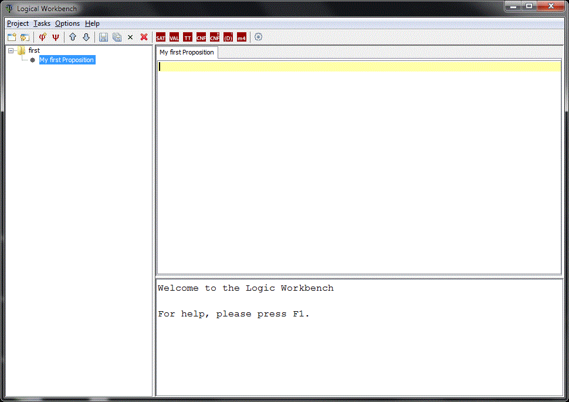

First steps with the MNI proposition analyzer
In this short tutorial we create a project and a new proposition.
We then perform some tasks on the proposition to learn about its
properties or to transform it.
Let's start.
- Project > New Project opens a dialog
for creating a new project file. Project files have the extension
.mpf.
Choose a name for the project, for example first.mpf.
The left pane shows the new project. Mark it as current project by clicking.
- Project > New Proposition opens a
dialog for creating a new proposition in the current project.
Choose a name for the proposition, e.g.
My First Proposition and
open the proposition editor by double clicking the new proposition.

- Now enter the proposition. You should see something like this:
- Now we can use one of the tasks to analyze the proposition. Let's check whether the
proposition is satisfiable e.g.:
 Tasks > Check SAT.
This is the result:
The proposition is actually valid, which we can check using
Tasks > Check SAT.
This is the result:
The proposition is actually valid, which we can check using  or
or  .
.
It's your turn now. Play with MPA: try other tasks, change settings, analyze your own
propositions or continue with some examples.